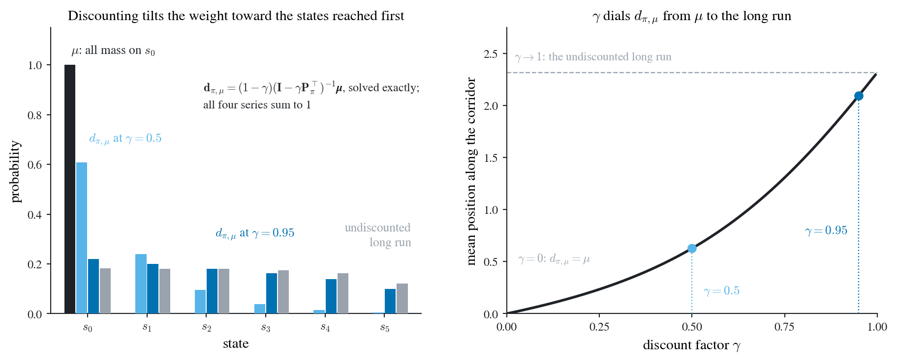

Solving the visitation distribution exactly at two discount factors
import matplotlib.pyplot as plt
# --- the same six-state corridor, made continuing ------------------------------
# States s0 -> ... -> s5 as behind @fig-4-reinforce-qac: advancing moves one state right,
# going back moves one left and bumps a wall at s0, and advancing from s5 steps off the
# end. There it ended the episode; here it RESTARTS at s0, which is the continuing
# version of the same corridor and is what gives the chain a long-run distribution for
# d to be compared against. d itself needs no such fix, only the comparison does.
# Nothing below is random: every number is a linear solve, so the figure is exact.
N_S = 6
P_BACK = 0.25 # the softmax @eq-softmax at a preference gap of ln 3 in favour of advancing
GAMMAS = (0.5, 0.95) # 0.95 is the corridor's own discount factor
def transition_matrix(p_back):
"""P_pi of @def-policy-averaged: row s is the distribution of the next state."""
P = np.zeros((N_S, N_S))
for s in range(N_S):
if s < N_S - 1:
P[s, s + 1] += 1.0 - p_back
else:
P[s, 0] += 1.0 - p_back # off the far end and back to the start
P[s, max(s - 1, 0)] += p_back # the wall at s0
return P
def visitation(P, mu, gamma):
"""d_{pi,mu} of @eq-dvisit in closed form, not by simulation.
The vector form d = (1-gamma) sum_t gamma^t (P^T)^t mu is a Neumann series, so the
whole infinite sum collapses to one linear solve. No sampling, no truncation of the
tail, no Monte-Carlo error anywhere in the figure.
"""
return (1.0 - gamma) * np.linalg.solve(np.eye(N_S) - gamma * P.T, mu)
def stationary(P):
"""The undiscounted long-run distribution: the one that solves d = P_pi^T d.
Stacking those fixed-point equations with the normalization 1^T d = 1 gives an
overdetermined system with exactly one solution, which least squares returns.
"""
A = np.vstack([P.T - np.eye(N_S), np.ones(N_S)])
return np.linalg.lstsq(A, np.r_[np.zeros(N_S), 1.0], rcond=None)[0]
P = transition_matrix(P_BACK)
mu = np.zeros(N_S)
mu[0] = 1.0 # every episode starts at s0
d_inf = stationary(P)
ds = [visitation(P, mu, g) for g in GAMMAS]
# Position along the corridor, so that E[position] summarizes a whole distribution in one
# number and the interpolation from mu to the long run can be drawn as a single curve.
pos = np.arange(N_S)
grid = np.linspace(0.0, 0.995, 400)
sweep = np.array([visitation(P, mu, g) @ pos for g in grid])
series = [(mu, INK), (ds[0], COL["sky"]), (ds[1], COL["blue"]), (d_inf, GREY)]
fig, (axL, axR) = plt.subplots(1, 2, figsize=(9.6, 4.0))
trim(axL), trim(axR)
# --- left: the four distributions over the same six states -------------------
w = 0.2
for k, (v, colour) in enumerate(series):
axL.bar(pos + (k - 1.5) * w, v, width=w * 0.92, color=colour, zorder=3)
axL.set_xticks(pos)
axL.set_xticklabels([rf"$s_{{{s}}}$" for s in pos])
axL.set_xlim(-0.62, 5.62)
axL.set_ylim(0, 1.15)
axL.set_yticks([0, 0.2, 0.4, 0.6, 0.8, 1.0])
axL.set_xlabel("state")
axL.set_ylabel("probability")
axL.set_title("Discounting tilts the weight toward the states reached first",
fontsize=11)
# Each label sits above its own bars, in space no bar reaches: the whole upper half of
# the panel is empty except for mu's single spike at s0.
label_at(axL, -0.28, 1.06, r"$\mu$: all mass on $s_{0}$", color=INK, fontsize=9.5)
label_at(axL, 0.02, 0.70, r"$d_{\pi,\mu}$ at $\gamma=0.5$",
color=COL["sky"], fontsize=9.5)
label_at(axL, 2.15, 0.32, r"$d_{\pi,\mu}$ at $\gamma=0.95$",
color=COL["blue"], fontsize=9.5)
label_at(axL, 5.45, 0.26, "undiscounted\nlong run", color=GREY, fontsize=9.5,
ha="right", va="bottom", linespacing=1.35)
label_at(axL, 1.95, 0.94,
r"$\mathbf{d}_{\pi,\mu}=(1-\gamma)(\mathbf{I}-\gamma"
r"\mathbf{P}_{\pi}^{\top})^{-1}\boldsymbol{\mu}$, solved exactly;"
"\nall four series sum to 1",
color=INK, fontsize=9, va="top", linespacing=1.5)
# --- right: where d lands, as gamma runs the whole way from 0 to 1 -----------
# Only the long-run rule is drawn. The other endpoint is mu, whose mean position is zero,
# so its rule would lie under the axis spine and add ink without adding information.
axR.plot([0, 1], [d_inf @ pos] * 2, color=GREY, lw=0.9, ls="--", zorder=2)
axR.plot(grid, sweep, color=INK, lw=2.0, zorder=4)
for g, (_, colour) in zip(GAMMAS, series[1:3]):
y = visitation(P, mu, g) @ pos
axR.plot([g, g], [0, y], color=colour, lw=0.9, ls=":", zorder=3)
axR.plot([g], [y], "o", color=colour, ms=6, zorder=5)
axR.set_xlim(0, 1.0)
axR.set_ylim(0, 2.75)
axR.set_xticks([0, 0.25, 0.5, 0.75, 1.0])
axR.set_xlabel(r"discount factor $\gamma$")
axR.set_ylabel("mean position along the corridor")
axR.set_title(r"$\gamma$ dials $d_{\pi,\mu}$ from $\mu$ to the long run", fontsize=11)
# Every label sits in the wedge the curve leaves empty: the two endpoint tags at the left
# margin, one above the dashed rule and one above the curve's flat start, and each marked
# gamma beside its own drop line, low enough that the curve is nowhere near.
label_at(axR, 0.02, d_inf @ pos + 0.15, r"$\gamma\to1$: the undiscounted long run",
color=GREY, fontsize=9)
label_at(axR, 0.03, 0.52, r"$\gamma=0$: $d_{\pi,\mu}=\mu$", color=GREY, fontsize=9)
label_at(axR, 0.53, 0.22, r"$\gamma=0.5$", color=COL["sky"], fontsize=9.5)
label_at(axR, 0.92, 0.80, r"$\gamma=0.95$", color=COL["blue"], fontsize=9.5, ha="right")
fig.tight_layout()
# ponytail: one runnable check of the figure's claims, on the exact numbers plotted. Each
# row is a probability distribution, which is what @def-visitation asserts; the four are
# ordered by first-order stochastic dominance, mu earliest and the long run latest, which
# is the sense in which d sits between them; and d minus the long run changes sign exactly
# once, which is the "more weight early, less weight late" the left title claims.
rows = np.array([mu] + ds + [d_inf])
assert np.allclose(rows.sum(axis=1), 1.0)
assert np.all(np.diff(np.cumsum(rows, axis=1), axis=0) <= 1e-12)
assert all(np.count_nonzero(np.diff(np.sign(d - d_inf))) == 1 for d in ds)
plt.show()